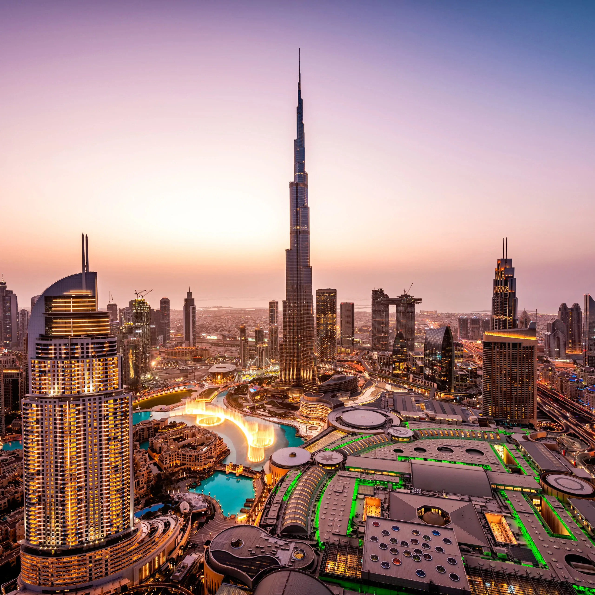
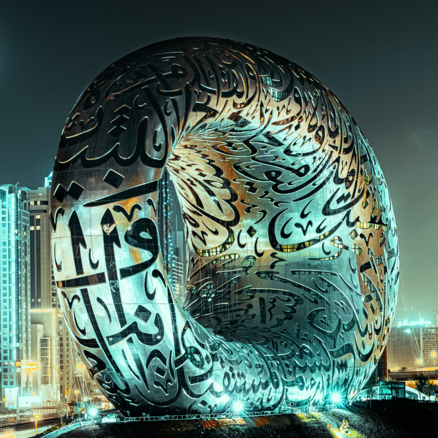

United Arab Emirates
From Ancient Pyramids to Vibrant Bazaars
My journey commences in Dubai, a city that needs no introduction. As I strolled through the bustling streets of Old Dubai, the aromas of spices and the vibrant textiles transported me to another world. My heart raced as I ascended the Burj Khalifa, the world's tallest building, for an awe-inspiring panoramic view of the city. Later, I experienced a thrilling desert safari, where I raced across the golden dunes in a 4x4, sandboarded down the slopes, and relished a traditional Bedouin feast under the starry desert sky.
 A short drive away, Abu Dhabi beckoned with its cultural treasures. At the stunning Sheikh Zayed Grand Mosque, I marveled at its opulent architecture, intricate mosaics, and the world's largest chandelier. A visit to the Louvre Abu Dhabi transported me through centuries of art history. My day ended with an exhilarating yacht tour along the city's coastline, witnessing the iconic Louvre dome and the sprawling Emirates Palace Hotel from the azure waters.
Next, I ventured to Sharjah, the UAE's cultural capital. The Sharjah Art Foundation welcomed me with its avant-garde exhibitions and installations, leaving me inspired by the fusion of tradition and innovation. My culinary adventure took me to Al Qasba, where I savored delectable Emirati cuisine, immersing myself in the flavors of the region. In the evening, I attended a traditional Emirati dance performance at the Heart of Sharjah, which transported me to the heart of Emirati culture.
My journey then led me eastward to Fujairah, the UAE's coastal gem. At the Al Bidya Mosque, I marveled at its ancient architecture, reflecting a history that predates the UAE's modernization. I couldn't resist the call of the sea, so I embarked on a snorkeling adventure in the crystal-clear waters of Snoopy Island, where colorful coral reefs and marine life greeted me at every turn.
 Ras Al Khaimah, known for its rugged mountains and outdoor adventures, was my next destination. I set out on a thrilling zip-lining excursion at Jebel Jais, the UAE's highest peak, where I soared above the jagged cliffs and deep valleys, capturing the breathtaking scenery through my lens. The day ended with a serene visit to the Al Wadi Desert, where I experienced a traditional Bedouin desert dinner, complete with stargazing.
Umm Al Quwain, the UAE's quiet emirate, provided a serene interlude. A visit to Dreamland Aqua Park offered a splash of fun and relaxation, as I zoomed down water slides and floated along lazy rivers. The idyllic mangrove forests of Umm Al Quwain's Khor Al Beidah provided a peaceful kayaking experience, allowing me to connect with nature in this tranquil corner of the UAE.
My final stop was Al Ain, often referred to as the Garden City for its lush oases and green landscapes. I explored the UNESCO-listed Al Ain Oasis, where palm groves and ancient irrigation systems revealed the region's agricultural history. At the Al Ain Zoo, I encountered rare wildlife species and learned about conservation efforts in the UAE. The highlight of my visit was a trek to Jebel Hafeet, a towering mountain offering panoramic views of the city and the sprawling desert beyond.
As I conclude my UAE odyssey, I am left in awe of this extraordinary nation, where modernity harmonizes with tradition, and where luxury and history coexist in perfect balance. My exploration of the United Arab Emirates has expanded my horizons and left an indelible mark on my heart.
Just as my journeys through the Americas have inspired a thirst for exploration in the hearts of my readers, I hope this sojourn through the UAE will ignite your wanderlust and spark a curiosity for the wonders that lie beyond your own horizons. The United Arab Emirates, with its timeless charms and contemporary marvels, is a destination that beckons to be discovered, and I am privileged to have shared this adventure with you. Until our next voyage, remember that the world is a treasure trove of experiences waiting to be embraced.